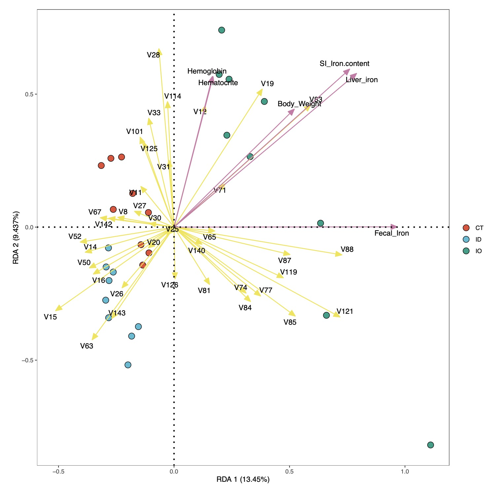

15. 冗余分析
在微生物研究中，RDA分析常被用来评估微生物数据和表型数据之间的相互关系。
15.1 EMP_COR_RDA模块
EMP_COR_RDA模块根据微生物数据和表型数据进行冗余分析。
15.1.1 参数介绍
data
由
data_filter函数产生的包含分组机各个样本微生物的数据框。meta
样本表型数据，格式需要符合
3.2格式要求。ellipse
设置散点的置信区间（0~1）。【默认：Null】
zoom
调整两种箭头和微生物样本的比例关系。【默认：1,1,1】
arrow_col
设置箭头颜色。【默认：#F0E442, #CC79A7】
seed
指定随机数种子，便于确定置换检验结果。【默认：123】
width
输出交互式图形宽度。
height
输出交互式图形高度。
palette
指定绘图色板。
15.1.2 使用范例
代码示例：
# 基本代码
library(EasyMicroPlot) # 加载包
# 加载表型数据
data(EMP)
meta_data <- EMP$iron # 这里使用内置的表型数据，用户也可以自行读取自己的数据，注意满足3.2格式要求
core_data <- data_filter(dir = '16s_data/',design = 'mapping/mapping.txt',
min_relative = 0.001,min_ratio = 0.7)
core_species<- core_data$filter_data$species # 这里用户可以自行选择所需要的微生物物种级别
RDA_re <- EMP_COR_RDA(data = core_species,meta=meta_data,width = 8,height = 8)
RDA_re$input_data # RDA模型输入的数据
RDA_re$model #RDA模型的基本结果
RDA_re$model_information #RDA模型的详细结果
基本计算结果：
# RDA模型的基本结果
RDA_re$model
Call: rda(X = data, Y = env, scale = T)
Inertia Proportion Rank
Total 38.0000 1.0000
Constrained 12.5115 0.3292 6
Unconstrained 25.4885 0.6708 20
Inertia is correlations
Eigenvalues for constrained axes:
RDA1 RDA2 RDA3 RDA4 RDA5 RDA6
5.109 3.586 1.576 1.121 0.689 0.429
Eigenvalues for unconstrained axes:
PC1 PC2 PC3 PC4 PC5 PC6 PC7 PC8
6.163 4.013 3.455 2.296 1.845 1.430 1.161 1.043
(Showing 8 of 20 unconstrained eigenvalues)
# RDA模型的详细结果
RDA_re$model_information$model_summary
Call:
rda(X = data, Y = env, scale = T)
Partitioning of correlations:
Inertia Proportion
Total 38.00 1.0000
Constrained 12.51 0.3292
Unconstrained 25.49 0.6708
Eigenvalues, and their contribution to the correlations
Importance of components:
RDA1 RDA2 RDA3 RDA4 RDA5 RDA6 PC1 PC2 PC3 PC4 PC5 PC6
Eigenvalue 5.1092 3.58609 1.57613 1.12142 0.68949 0.42914 6.1627 4.0131 3.45516 2.29576 1.84545 1.43043
Proportion Explained 0.1345 0.09437 0.04148 0.02951 0.01814 0.01129 0.1622 0.1056 0.09093 0.06041 0.04856 0.03764
Cumulative Proportion 0.1345 0.22882 0.27030 0.29981 0.31796 0.32925 0.4914 0.5970 0.68796 0.74838 0.79694 0.83458
PC7 PC8 PC9 PC10 PC11 PC12 PC13 PC14 PC15 PC16 PC17
Eigenvalue 1.16095 1.04348 0.73698 0.61109 0.50384 0.45506 0.42056 0.348389 0.282187 0.213881 0.200801
Proportion Explained 0.03055 0.02746 0.01939 0.01608 0.01326 0.01198 0.01107 0.009168 0.007426 0.005628 0.005284
Cumulative Proportion 0.86513 0.89259 0.91199 0.92807 0.94133 0.95330 0.96437 0.973540 0.980966 0.986594 0.991878
PC18 PC19 PC20
Eigenvalue 0.142234 0.110554 0.055839
Proportion Explained 0.003743 0.002909 0.001469
Cumulative Proportion 0.995621 0.998531 1.000000
Accumulated constrained eigenvalues
Importance of components:
RDA1 RDA2 RDA3 RDA4 RDA5 RDA6
Eigenvalue 5.1092 3.5861 1.576 1.12142 0.68949 0.4291
Proportion Explained 0.4084 0.2866 0.126 0.08963 0.05511 0.0343
Cumulative Proportion 0.4084 0.6950 0.821 0.91059 0.96570 1.0000
Scaling 2 for species and site scores
* Species are scaled proportional to eigenvalues
* Sites are unscaled: weighted dispersion equal on all dimensions
* General scaling constant of scores: 5.606467
Species scores
RDA1 RDA2 RDA3 RDA4 RDA5 RDA6
V8 -0.243406 0.03688 -0.097118 -0.3081485 0.1179041 0.091868
V11 -0.143506 0.15285 -0.058295 0.0023186 0.1021557 0.094997
V14 -0.384488 -0.09462 -0.047440 -0.0518109 0.0141012 -0.118778
V15 -0.512649 -0.31431 0.210785 -0.1881004 0.0466457 -0.181693
V16 -0.349123 -0.17635 0.011270 -0.0703175 -0.0677141 -0.050305
V19 0.381932 0.51890 -0.020282 -0.1003108 -0.0718708 -0.224673
V20 -0.111128 -0.07816 0.569293 -0.0552672 0.0987528 -0.062916
V25 -0.030865 -0.02891 0.092962 -0.0953025 -0.2437449 -0.101069
V26 -0.224865 -0.22819 -0.124940 0.0992710 -0.0274671 -0.176101
V27 -0.171180 0.05944 -0.278865 -0.3080360 -0.1468861 0.076930
V28 -0.065453 0.67067 -0.192985 0.0976391 0.0498934 -0.139136
V30 -0.106414 0.01383 -0.194588 -0.1743389 -0.0351231 -0.061128
V31 -0.021339 0.25083 -0.200792 0.0397861 -0.3304671 0.106561
V33 -0.109553 0.40942 0.442589 -0.2831694 -0.0851655 -0.075984
V50 -0.366408 -0.15329 -0.101090 -0.3850630 0.1157340 0.038950
V63 -0.354498 -0.42351 0.068422 0.1225142 -0.1229148 0.050978
V67 -0.319194 0.03537 0.083127 0.1847560 -0.1105854 0.155644
V74 0.311921 -0.24809 0.067841 -0.0666054 -0.0672168 -0.042860
V77 0.374762 -0.25876 0.115443 0.0002488 0.0239864 0.054075
V81 0.153913 -0.21544 -0.072806 -0.1505837 0.0481929 0.015838
V84 0.331083 -0.27976 0.034041 -0.1223141 0.1108386 0.067295
V85 0.524764 -0.33441 -0.019799 -0.0420467 -0.0250583 -0.011374
V87 0.501936 -0.10304 -0.314432 -0.2281355 0.0448296 0.050468
V88 0.726625 -0.10428 0.014152 -0.0915228 0.0729030 -0.045347
V101 -0.146542 0.33825 -0.115519 0.0444386 0.1515639 0.046971
V114 -0.028116 0.47193 0.152871 -0.0680606 0.0989948 0.137106
V119 0.473259 -0.19041 0.139634 -0.0425908 -0.0874574 0.041667
V121 0.718153 -0.33770 -0.074219 -0.0337590 -0.1277873 0.045839
V125 -0.130797 0.31904 -0.173137 0.1149292 0.0243022 0.071180
V126 0.004231 -0.19476 0.006752 0.0686144 0.2491351 0.069939
V140 0.121136 -0.06454 -0.211270 0.0438176 0.1706271 -0.109742
V142 -0.282434 0.03333 0.003755 -0.2451765 -0.2129072 0.029075
V52 -0.405960 -0.05622 -0.082740 0.0118185 0.1817272 0.026463
V143 -0.269370 -0.34344 0.274121 0.1978757 -0.0466595 0.104330
V12 0.135333 0.45699 0.206549 -0.0328786 -0.0627156 0.156439
V65 0.176603 -0.01458 -0.090758 0.2975274 -0.0009763 -0.138004
V71 0.221727 0.16221 0.172903 -0.1405882 0.1406303 0.024677
V83 0.590742 0.45924 0.247837 0.0338988 0.0321844 -0.006069
Site scores (weighted sums of species scores)
RDA1 RDA2 RDA3 RDA4 RDA5 RDA6
A01 -1.5735 2.10285 -0.98844 -2.37224 -0.32431 0.25782
A02 1.0266 -0.47112 -0.49387 -0.66761 -0.66889 0.56561
A03 0.8444 -0.87977 -1.27107 -2.35823 3.20291 2.94021
A04 -0.8495 -0.35290 -2.05824 -2.31916 -0.55385 -3.19843
A05 0.7456 -1.33236 0.77078 -2.47486 -0.56605 -1.44256
A06 -1.5493 0.06858 -1.31362 -2.89117 0.79461 -0.77611
A07 -0.4269 0.65633 -1.08187 1.25994 2.46753 1.73061
A08 -0.8199 0.77556 -2.10277 2.45605 -1.89667 -3.86567
A09 -0.4997 1.68621 -1.40465 2.94037 3.86438 1.86292
B10 0.5206 -2.08254 1.50198 0.73367 0.99828 -2.09808
B11 -2.1633 -0.41409 1.99713 1.09839 0.35495 -0.98757
B12 -1.5928 -1.20695 -0.18861 1.75651 0.54059 -0.91690
B13 -0.5559 -0.99992 2.08953 -0.53576 0.72937 2.09262
B14 -0.3154 -0.38448 0.03413 1.16950 2.15026 3.73487
B15 -1.2059 0.31930 0.22055 -0.64470 -2.60016 3.19606
B16 -2.2593 -0.24313 0.72890 -0.29854 -3.58506 -2.24263
B17 0.4774 -1.58770 0.91528 0.47564 -1.46366 0.04101
B18 -1.1776 -1.14826 -0.19400 0.80590 -1.57564 -0.35484
C19 0.7307 2.05844 -0.25915 -1.30418 -1.53875 -1.45422
C20 -0.3447 3.08312 3.24645 -0.03043 -1.78849 -4.04400
C21 0.9180 1.07669 1.55438 -0.22500 2.91450 1.99859
C22 0.3113 1.64132 0.25537 0.97648 -2.57407 1.78402
C23 0.9278 1.34665 -0.33049 1.20587 2.40675 1.30725
C24 2.2438 -1.05578 -0.38571 0.35277 -0.80547 -0.66775
C25 2.1288 -1.23157 -0.27717 0.59992 -0.07386 0.55567
C26 2.8215 -1.61911 -1.24582 -1.03061 -0.80172 -0.56023
C27 1.6374 0.19463 0.28099 1.32149 0.39252 0.54173
Site constraints (linear combinations of constraining variables)
RDA1 RDA2 RDA3 RDA4 RDA5 RDA6
A01 -0.9450 0.69431 -1.09950 -2.2728004 -0.19839 -0.10772
A02 -0.6814 0.79044 -1.06571 -0.7102468 0.84313 0.31903
A03 -0.3325 0.16445 -0.00130 -0.6908343 1.00812 -0.52817
A04 -0.4290 -0.19821 -0.57624 0.0908234 0.74599 0.35752
A05 -0.4065 -0.42782 0.14021 -1.3158400 0.09924 -0.65945
A06 -0.7891 0.19982 -1.14082 -2.4605480 -0.11447 -0.37798
A07 -0.3258 -0.29069 -0.70006 1.4152527 1.43928 0.88573
A08 -0.8199 0.77556 -2.10277 2.4560510 -1.89667 -3.86567
A09 -0.5374 0.37967 -1.10054 0.2940973 0.83668 0.86630
B10 -0.5984 -1.55336 1.32644 0.6659005 1.66361 -0.99827
B11 -0.8872 -0.82365 -0.06146 0.3093449 1.70301 -0.28153
B12 -0.8487 -1.02191 0.42847 0.0379636 1.66405 -0.74928
B13 -0.4627 -1.12189 1.50343 1.0586162 -0.69875 0.37184
B14 -0.8515 -0.23436 0.07051 0.0707862 -1.37378 1.11538
B15 -0.8442 -0.60273 0.39329 -0.1961204 -1.61422 0.81274
B16 -0.8817 -0.44914 0.16447 -0.1530870 -0.87577 0.64100
B17 -0.5506 -1.22883 1.87383 0.0008429 -1.86875 0.06954
B18 -0.7895 -0.50674 -0.15849 0.7567120 -0.98984 1.41958
C19 0.6185 2.22194 0.07883 -0.1561215 -0.02548 0.48620
C20 0.7145 1.66846 2.80588 -0.3785720 -0.25915 -1.15531
C21 1.1727 1.41746 1.66662 -0.7760910 0.65029 -1.38191
C22 0.5862 1.72212 -0.43845 1.1549307 -0.41819 1.69981
C23 0.9887 0.79432 0.31634 1.6182242 1.35950 0.43986
C24 1.9791 -0.99426 -0.25711 -1.0953856 -1.17916 -0.29562
C25 1.9026 0.04425 -0.30714 0.9387210 -0.21708 0.77651
C26 3.3327 -2.45617 -1.48160 -0.4824233 0.04407 -0.42065
C27 0.6861 1.03696 -0.27713 -0.1801964 -0.32726 0.56050
Biplot scores for constraining variables
RDA1 RDA2 RDA3 RDA4 RDA5 RDA6
Body_Weight 0.5206 0.4436600 -0.3798 0.56016 0.2633 0.069393
Hemoglobin 0.1662 0.5662365 -0.7618 -0.23690 0.1239 0.001214
Hematocrite 0.1688 0.5657423 -0.7583 -0.24414 0.1294 0.011582
Fecal_Iron 0.9665 0.0009713 -0.2170 -0.10697 -0.0264 -0.081759
SI_Iron.content 0.7605 0.5942258 0.0965 -0.14106 0.1406 -0.139699
Liver_iron 0.7905 0.5778338 0.1416 -0.04596 -0.1325 0.038554
# RDA模型的置换检验结果
RDA_re$model_information$model_permutest
Permutation test for rda under reduced model
Permutation: free
Number of permutations: 999
Model: rda(X = data, Y = env, scale = T)
Permutation test for all constrained eigenvalues
Df Inertia F Pr(>F)
Model 6 12.511 1.6362 0.002 **
Residual 20 25.488
---
Signif. codes: 0 ‘***’ 0.001 ‘**’ 0.01 ‘*’ 0.05 ‘.’ 0.1 ‘ ’ 1
# 表型数据因子检验结果
RDA_re$model_information$model_envfit
***VECTORS
RDA1 RDA2 r2 Pr(>r)
Body_Weight 0.73855 0.67420 0.3918 0.003 **
Hemoglobin 0.42460 0.90538 0.2708 0.025 *
Hematocrite 0.42767 0.90393 0.2715 0.026 *
Fecal_Iron 0.97803 0.20846 0.6436 0.001 ***
SI_Iron.content 0.75712 0.65328 0.7775 0.001 ***
Liver_iron 0.77079 0.63709 0.7974 0.001 ***
---
Signif. codes: 0 ‘***’ 0.001 ‘**’ 0.01 ‘*’ 0.05 ‘.’ 0.1 ‘ ’ 1
Permutation: free
Number of permutations: 999
# 表型数据膨胀系数检验
RDA_re$model_information$model_vif
Body_Weight Hemoglobin Hematocrite Fecal_Iron SI_Iron.content Liver_iron
1.968550 5408.293695 5400.909539 2.342255 10.267973 9.785037
图形结果展示：
# 基本图形展示
RDA_re$plot$pic

# 交互式图形
RDA_re$plot$html
Tips 1：可以将鼠标放在感兴趣的点，查询样本信息及基本情况。
# 可以调整参数，进一步美化或者调整图形输出效果
# zoom 参数调整箭头和样本的相对距离
# arrow_col 调整两个箭头的颜色
# palette 调整分组颜色
# ellipse 在0~1之间取值标注样本置信区间
RDA_re <- EMP_COR_RDA(data = core_species,meta=EMP$iron,
width = 10,height = 10,ellipse = 0.7,zoom = c(1,1.5,2),
arrow_col = c('#FCE181','#F05A50'),palette = c('green','yellow','blue'))